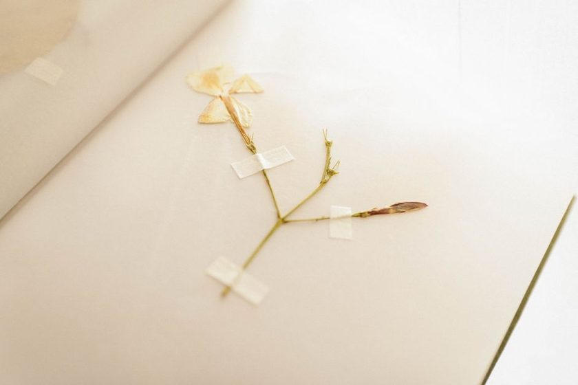

Pressbook
A log for what's in the press right now
Pressbook keeps the schedule so you don't have to. It tells you what's drying, when the blotters were last changed, and which specimens still need a finished label — nothing more.
What it does
Six things, done plainly
-
Press log
Every sheet in the press gets an entry: date it went in, expected drying time, current blotter status. When something has been in longer than it should, it sits at the top of the list instead of getting forgotten.
-
Blotter reminders
Set your own interval per specimen — thin leaves dry faster than thick stems — and Pressbook reminds you on that schedule, not a generic one.
-
Label builder
Fill locality, date, habitat, collector, and determination once. Pressbook lays it out at the size a standard herbarium sheet expects and lets you print it.
-
Locality notes
Attach coordinates, elevation, associated species, and a short habitat description to any entry, so the context survives even if your memory doesn't.
-
Collection index
Browse everything you've pressed by family, collecting trip, or date — useful when you're trying to remember whether you already have a species.
-
Export sheet
Generate a plain printable record of a folder or a full collection for sharing with a local herbarium or a collecting partner.
How it works
From field to folder
-
Log it when it goes in the press
Enter the species (or "unidentified" — that's fine), the date, and where it was collected. Takes under a minute in the field or back at the desk.
-
Get reminded on your schedule
Pressbook nudges you when a blotter change is due based on the interval you set for that type of specimen.
-
Mark it dry
When a sheet is done, mark it dry and Pressbook moves it from the active press log to the mounting queue.
-
Build and print the label
Fill the remaining label fields — determination, notes — and print a label sized for your mounting paper.
-
File it in the index
The finished, labeled specimen joins your searchable collection index, ready to browse by family or trip.
Questions
Before you start
Does Pressbook replace a physical herbarium?
No. Pressbook is a log and a label printer. The specimens still live in folders and boxes; the app just keeps track of what's where and what's due.
Can I use it for a single houseplant collection, not a formal herbarium?
Yes — most people who use Pressbook aren't running an institutional collection. The same fields (locality, date, collector) work for a backyard project.
Do I need to know a plant's scientific name to log it?
No. You can log a specimen as "unidentified" or with a common name and fill in the determination later, or leave it blank permanently.
What does a printed label look like?
A plain rectangle sized for a standard herbarium sheet corner, with the six core fields in a readable serif layout — nothing decorative, meant to be archival.
A short note, roughly monthly
New entries from the journal and the occasional field observation. No noise, no schedule beyond "when there's something worth writing down."
You're on the list. Thank you.